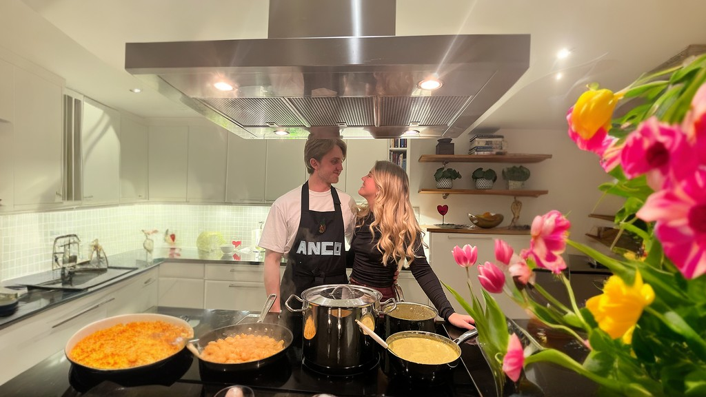

Om Oss
ANCO Food är ett matkonto som drivs av oss Andreas & Cornelia. Som vissa kanske redan gissat så står namnet ANCO för de två första bokstäverna i våra namn! Eftersom vi har ett gemensamt intresse för att mat vill vi dela med oss av vår matlagning. Därför startade vi instagramkontot @ancofood som redan består över 60 maträtter! Nu är det dock dags för oss att börja göra mer detaljerade beskrivningar av recept och hur man lagar, därav välkomnar vi nu dig till ANCOs egna hemsida!